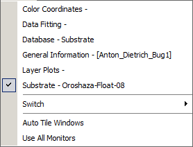

Window Menu
This menu shows all currently opened windows in OptiChar. You can easily activate any window by selecting it from the list, allowing for quick navigation between different tasks and ensuring that you can focus on the work you need to do seamlessly.

Using this menu is equivalent to the Window List… command.
Switch menu item opens a submenu that lists all instances of OptiChar currently in memory. By selecting a different item, you can easily switch control to another instance.
Auto Tile Windows command begins the automated repositioning of windows. This repositioning is handled by an algorithm that attempts to arrange the windows in a tiled style. If you have a multi-monitor setup, the primary monitor is considered first, followed by all other monitors.
Use All Monitors command enables the Tile command and user interface commands to open windows across additional monitors. However, some users may prefer that the software opens new windows only on the primary monitor. In that case, simply uncheck this option.